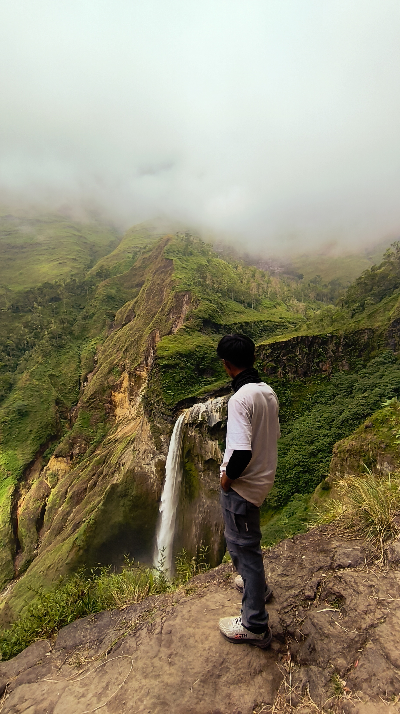
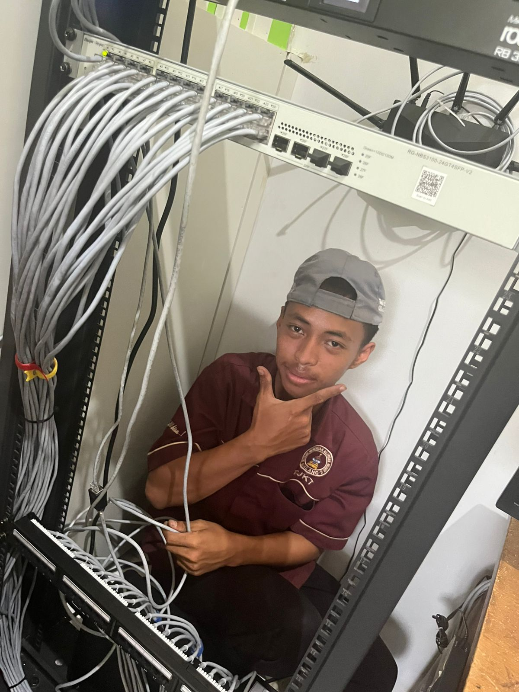

Selamat Datang di Portofolio Saya
Web Developer
Tentang Saya
Hallo!! nama saya Sadewo Aji Dewandaru. Saya adalah pribadi yang suka tantangan dan petualangan. Saya memiliki hobi mendaki gunung dan traveling ke tempat-tempat baru. Bagi saya, alam adalah guru terbaik. Dari mendaki, saya belajar tentang kesabaran, ketekunan, dan kekuatan kerja sama.
Melalui traveling, saya mendapatkan banyak pengalaman baru dan pandangan yang lebih luas tentang kehidupan. Saya senang mengeksplorasi hal-hal baru dan terus belajar untuk menjadi versi terbaik dari diri saya sendiri.
Proyek Saya
Menata Server UPJ TKJ
Merakit rak server dan mengatur kabel-kabel server.
